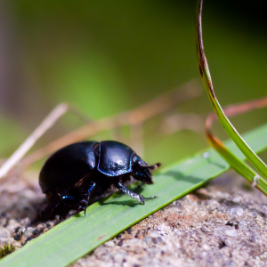

RadialBlur QML Type
Applies directional blur in a circular direction around the items center point. More...
| Import Statement: | import Qt5Compat.GraphicalEffects |
| Since: | Qt5Compat.GraphicalEffects 1.0 |
| Inherits: |
Properties
- angle : real
- cached : bool
- horizontalOffset : real
- samples : int
- source : variant
- transparentBorder : bool
- verticalOffset : real
Detailed Description
Effect creates perceived impression that the source item appears to be rotating to the direction of the blur.
Other available motionblur effects are ZoomBlur and DirectionalBlur.
| Source | Effect applied |
|---|---|
|

Note: This effect is available when running with OpenGL.
Example Usage
The following example shows how to apply the effect.
import QtQuick import Qt5Compat.GraphicalEffects Item { width: 300 height: 300 Image { id: bug source: "images/bug.jpg" sourceSize: Qt.size(parent.width, parent.height) smooth: true visible: false } RadialBlur { anchors.fill: bug source: bug samples: 24 angle: 30 } }
Property Documentation
angle : real |
This property defines the direction for the blur and at the same time the level of blurring. The larger the angle, the more the result becomes blurred. The quality of the blur depends on samples property. If angle value is large, more samples are needed to keep the visual quality at high level.
Allowed values are between 0.0 and 360.0. By default the property is set to 0.0.
| Output examples with different angle values | ||
|---|---|---|
 | ||
| angle: 0.0 | angle: 15.0 | angle: 30.0 |
| samples: 24 | samples: 24 | samples: 24 |
| horizontalOffset: 0 | horizontalOffset: 0 | horizontalOffset: 0 |
| verticalOffset: 0 | verticalOffset: 0 | verticalOffset: 0 |
cached : bool |
This property allows the effect output pixels to be cached in order to improve the rendering performance.
Every time the source or effect properties are changed, the pixels in the cache must be updated. Memory consumption is increased, because an extra buffer of memory is required for storing the effect output.
It is recommended to disable the cache when the source or the effect properties are animated.
By default, the property is set to false.
horizontalOffset : real |
These properties define the offset in pixels for the perceived center point of the rotation.
Allowed values are between -inf and inf. By default these properties are set to 0.
| Output examples with different horizontalOffset values | ||
|---|---|---|
| horizontalOffset: 75.0 | horizontalOffset: 0.0 | horizontalOffset: -75.0 |
| samples: 24 | samples: 24 | samples: 24 |
| angle: 20 | angle: 20 | angle: 20 |
| verticalOffset: 0 | verticalOffset: 0 | verticalOffset: 0 |
samples : int |
This property defines how many samples are taken per pixel when blur calculation is done. Larger value produces better quality, but is slower to render.
This property is not intended to be animated. Changing this property may cause the underlying OpenGL shaders to be recompiled.
Allowed values are between 0 and inf (practical maximum depends on GPU). By default the property is set to 0 (no samples).
source : variant |
This property defines the source item that is going to be blurred.
Note: It is not supported to let the effect include itself, for instance by setting source to the effect's parent.
transparentBorder : bool |
This property defines the blur behavior near the edges of the item, where the pixel blurring is affected by the pixels outside the source edges.
If the property is set to true, the pixels outside the source are interpreted to be transparent, which is similar to OpenGL clamp-to-border extension. The blur is expanded slightly outside the effect item area.
If the property is set to false, the pixels outside the source are interpreted to contain the same color as the pixels at the edge of the item, which is similar to OpenGL clamp-to-edge behavior. The blur does not expand outside the effect item area.
By default, the property is set to false.
verticalOffset : real |
These properties define the offset in pixels for the perceived center point of the rotation.
Allowed values are between -inf and inf. By default these properties are set to 0.
| Output examples with different horizontalOffset values | ||
|---|---|---|
| horizontalOffset: 75.0 | horizontalOffset: 0.0 | horizontalOffset: -75.0 |
| samples: 24 | samples: 24 | samples: 24 |
| angle: 20 | angle: 20 | angle: 20 |
| verticalOffset: 0 | verticalOffset: 0 | verticalOffset: 0 |